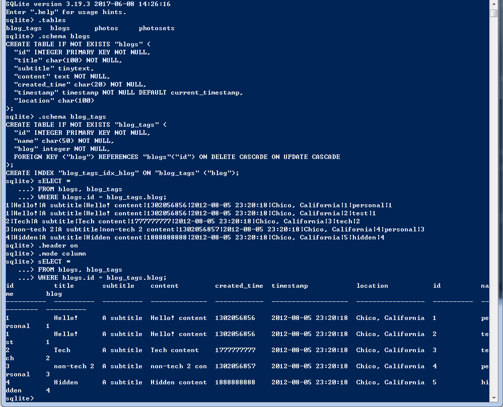

SQL(structured query language)可以理解为一种标准语言，不管底层最终的database是MySQL还是sqlite，都是支持这个标准语言的。虽然在脚本语言中，有DBI(database interface) module，比如Perl里的DBIx::Class，为用户操作数据库提供了便利的wrapper，但是了解一些基本的SQL操作，很有必要。 推荐两个非常棒的SQL教学视频，比如:sqlite3 tutorial 和 MySQL 。
再回到我最近看的MojoExample源代码上来。Schema::Result::Blog.pm，有一段代码是这样:
__PACKAGE__->has_many(
"blog_tags",
"Schema::Result::BlogTag",
{ "foreign.blog" => "self.id" },
{ cascade_copy => 0, cascade_delete => 0 },
);
就是说一个Blog有多个BlogTag，table blog_tags的column成员blog映射到table blogs的column成员id上。 再来看Schema::Result::BlogTag.pm的一段:
__PACKAGE__->belongs_to(
"blog",
"Schema::Result::Blog",
{ id => "blog" },
{ is_deferrable => 1, on_delete => "CASCADE", on_update => "CASCADE" },
);
这个代码不够友好，参考这个帖子versioning-with-dbic 后，我们把这一段改一下:
__PACKAGE__->belongs_to(
"blog",
"Schema::Result::Blog",
{ "foreign.id" => "self.blog" },
{ is_deferrable => 1, on_delete => "CASCADE", on_update => "CASCADE" },
);
这样就清晰多了，table blogs的column成员id映射到table blog_tags的column成员blog上。
进到MojoExample目录下，看一下现有的数据库长什么样:
sqlite3 test.db
发几个命令熟悉一下，最后一条是JOIN命令，另外还有LEFT JOIN，RIGHT JOIN等，去w3school上看吧。
